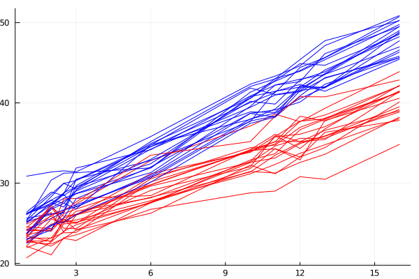
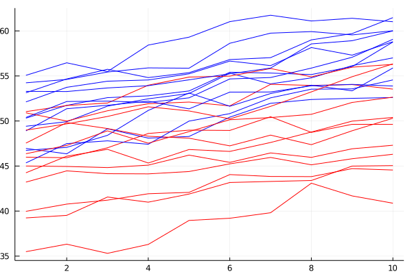

Examples
Example 1 - Continuous and categorical predictors
using Metida, StatsPlots, CSV, DataFrames, MixedModels;
rds = CSV.File(joinpath(dirname(pathof(Metida)), "..", "test", "csv", "1fptime.csv"); types = [String, String, Float64, Float64]) |> DataFrame
@df rds plot(:time, :response, group = (:subject, :factor), colour = [:red :blue], legend = false)/home/runner/.julia/packages/GR/G9I5v/src/../deps/gr/bin/gksqt: error while loading shared libraries: libQt5Widgets.so.5: cannot open shared object file: No such file or directory connect: Connection refused GKS: can't connect to GKS socket application GKS: Open failed in routine OPEN_WS GKS: GKS not in proper state. GKS must be either in the state WSOP or WSAC in routine ACTIVATE_WS
Model: response ~ 1 + factor*time

Metida result:
lmm = Metida.LMM(@formula(response ~1 + factor*time), rds;
random = Metida.VarEffect(Metida.@covstr(1 + time), Metida.CSH),
subject = [:subject, :factor]
)
Metida.fit!(lmm)Linear Mixed Model: response ~ 1 + factor + time + factor & time Random 1: Model: 1 + time Type: CSH (3) Repeated: Model: 1 Type: SI (1) Status: converged -2 logREML: 1300.18 Fixed effects: Name Estimate SE z Pr(>|z|) (Intercept) 22.1331 0.304339 72.7251 0.0 factor: 1.0 2.00049 0.430401 4.64796 3.35228e-6 time 1.11853 0.0264038 42.3624 0.0 factor: 1.0 & time 0.404971 0.0373406 10.8453 2.09844e-27 Random effects: θ vector: [1.2401, 0.101122, -0.0427208, 0.985061] Random 1 σ² (Intercept) var 1.53785 Random 1 σ² time var 0.0102257 Random 1 ρ rho -0.0427208 Residual σ² var 0.970345
MixedModels result:
fm = @formula(response ~ 1 + factor*time + (1 + time|subject&factor))
mm = fit(MixedModel, fm, rds, REML=true)Linear mixed model fit by REML
response ~ 1 + factor + time + factor & time + (1 + time | subject & factor)
REML criterion at convergence: 1300.1807598192281
Variance components:
Column Variance Std.Dev. Corr.
subject & factor (Intercept) 1.537868 1.240108
time 0.010226 0.101123 -0.04
Residual 0.970344 0.985060
Number of obs: 400; levels of grouping factors: 40
Fixed-effects parameters:
──────────────────────────────────────────────────────────
Coef. Std. Error z Pr(>|z|)
──────────────────────────────────────────────────────────
(Intercept) 22.1331 0.30434 72.72 <1e-99
factor: 1.0 2.00049 0.430402 4.65 <1e-5
time 1.11853 0.0264038 42.36 <1e-99
factor: 1.0 & time 0.404971 0.0373407 10.85 <1e-26
──────────────────────────────────────────────────────────Example 2 - Two random factors (Penicillin data)
Metida:
df = CSV.File(joinpath(dirname(pathof(Metida)), "..", "test", "csv", "Penicillin.csv"); types = [String, Float64, String, String]) |> DataFrame
df.diameter = float.(df.diameter)
lmm = Metida.LMM(@formula(diameter ~ 1), df;
random = [Metida.VarEffect(Metida.SI, subj = :plate), Metida.VarEffect(Metida.SI, subj = :sample)]
)
Metida.fit!(lmm)Linear Mixed Model: diameter ~ 1 Random 1: Model: 1 Type: SI (1) Random 2: Model: 1 Type: SI (1) Repeated: Model: 1 Type: SI (1) Status: converged -2 logREML: 330.861 Fixed effects: Name Estimate SE z Pr(>|z|) (Intercept) 22.9722 0.808573 28.4108 1.4870599999999999e-177 Random effects: θ vector: [0.846704, 1.93156, 0.549923] Random 1 σ² var 0.716908 Random 2 σ² var 3.73092 Residual σ² var 0.302415
MixedModels:
fm2 = @formula(diameter ~ 1 + (1|plate) + (1|sample))
mm = fit(MixedModel, fm2, df, REML=true)Linear mixed model fit by REML
diameter ~ 1 + (1 | plate) + (1 | sample)
REML criterion at convergence: 330.8605889909948
Variance components:
Column Variance Std.Dev.
plate (Intercept) 0.716908 0.846704
sample (Intercept) 3.730909 1.931556
Residual 0.302415 0.549923
Number of obs: 144; levels of grouping factors: 24, 6
Fixed-effects parameters:
─────────────────────────────────────────────────
Coef. Std. Error z Pr(>|z|)
─────────────────────────────────────────────────
(Intercept) 22.9722 0.808572 28.41 <1e-99
─────────────────────────────────────────────────Example 3 - Repeated ARMA/AR/ARH
rds = CSV.File(joinpath(dirname(pathof(Metida)), "..", "test", "csv", "1freparma.csv"); types = [String, String, Float64, Float64]) |> DataFrame
@df rds plot(:time, :response, group = (:subject, :factor), colour = [:red :blue], legend = false)/home/runner/.julia/packages/GR/G9I5v/src/../deps/gr/bin/gksqt: error while loading shared libraries: libQt5Widgets.so.5: cannot open shared object file: No such file or directory connect: Connection refused GKS: can't connect to GKS socket application GKS: Open failed in routine OPEN_WS GKS: GKS not in proper state. GKS must be either in the state WSOP or WSAC in routine ACTIVATE_WS

ARMA:
lmm = Metida.LMM(@formula(response ~ 1 + factor*time), rds;
random = Metida.VarEffect(Metida.@covstr(factor), Metida.DIAG),
repeated = Metida.VarEffect(Metida.ARMA),
subject = [:subject, :factor]
)
Metida.fit!(lmm)Linear Mixed Model: response ~ 1 + factor + time + factor & time Random 1: Model: factor Type: DIAG (2) Repeated: Model: 1 Type: ARMA (3) Status: converged -2 logREML: 709.14 Fixed effects: Name Estimate SE z Pr(>|z|) (Intercept) 44.3896 1.35084 32.8609 7.96589e-237 factor: 1.0 5.40834 1.60921 3.36087 0.000776975 time 0.508736 0.0481765 10.5598 4.5749e-26 factor: 1.0 & time 0.286837 0.0681318 4.21003 2.5534e-5 Random effects: θ vector: [4.53791, 2.8059, 1.12292, 0.625323, 0.713154] Random 1 σ² factor: 0.0 var 20.5926 Random 1 σ² factor: 1.0 var 7.87307 Residual σ² var 1.26095 Residual γ rho 0.625323 Residual ρ rho 0.713154
AR:
lmm = Metida.LMM(@formula(response ~ 1 + factor*time), rds;
random = Metida.VarEffect(Metida.@covstr(factor), Metida.DIAG),
repeated = Metida.VarEffect(Metida.AR),
subject = [:subject, :factor]
)
Metida.fit!(lmm)Linear Mixed Model: response ~ 1 + factor + time + factor & time Random 1: Model: factor Type: DIAG (2) Repeated: Model: 1 Type: AR (2) Status: converged -2 logREML: 710.096 Fixed effects: Name Estimate SE z Pr(>|z|) (Intercept) 44.3915 1.34686 32.9594 3.10194e-238 factor: 1.0 5.39757 1.60271 3.36778 0.000757757 time 0.508075 0.0456524 11.1292 9.04328e-29 factor: 1.0 & time 0.290317 0.0645622 4.4967 6.90159e-6 Random effects: θ vector: [4.54797, 2.82342, 1.05771, 0.576979] Random 1 σ² factor: 0.0 var 20.684 Random 1 σ² factor: 1.0 var 7.9717 Residual σ² var 1.11875 Residual ρ rho 0.576979
ARH:
lmm = Metida.LMM(@formula(response ~ 1 + factor*time), rds;
random = Metida.VarEffect(Metida.@covstr(factor), Metida.DIAG),
repeated = Metida.VarEffect(Metida.ARH),
subject = [:subject, :factor]
)
Metida.fit!(lmm)Linear Mixed Model: response ~ 1 + factor + time + factor & time Random 1: Model: factor Type: DIAG (2) Repeated: Model: 1 Type: ARH (2) Status: converged -2 logREML: 710.096 Fixed effects: Name Estimate SE z Pr(>|z|) (Intercept) 44.3915 1.34686 32.9594 3.10194e-238 factor: 1.0 5.39757 1.60271 3.36778 0.000757757 time 0.508075 0.0456524 11.1292 9.04328e-29 factor: 1.0 & time 0.290317 0.0645622 4.4967 6.90159e-6 Random effects: θ vector: [4.54797, 2.82342, 1.05771, 0.576979] Random 1 σ² factor: 0.0 var 20.684 Random 1 σ² factor: 1.0 var 7.9717 Residual σ² (Intercept) var 1.11875 Residual ρ rho 0.576979
Other
using Metida, StatsBase, StatsModels, CSV, DataFrames
df0 = CSV.File(dirname(pathof(Metida))*"\\..\\test\\csv\\df0.csv") |> DataFrame
################################################################################
# EXAMPLE 1
################################################################################
#=
PROC MIXED data=df0;
CLASSES subject sequence period formulation;
MODEL var = sequence period formulation/ DDFM=SATTERTH s;
RANDOM formulation/TYPE=CSH SUB=subject G V;
REPEATED/GRP=formulation SUB=subject R;
RUN;
REML: 10.06523862
=#
lmm = LMM(@formula(var ~ sequence + period + formulation), df0;
random = VarEffect(@covstr(formulation), CSH),
repeated = VarEffect(@covstr(formulation), DIAG),
subject = :subject)
fit!(lmm)
#=
Linear Mixed Model: var ~ sequence + period + formulation
Random 1:
Model: formulation
Type: HeterogeneousCompoundSymmetry (3)
Coefnames: ["formulation: 1", "formulation: 2"]
Repeated:
Model: formulation
Type: VarianceComponents (2)
Coefnames: ["formulation: 1", "formulation: 2"]
Status: converged
-2 logREML: 10.0652
Fixed effects:
Name Estimate SE
(Intercept) 1.57749 0.334543
sequence: 2 -0.170833 0.384381
period: 2 0.195984 0.117228
period: 3 0.145014 0.109171
period: 4 0.157363 0.117228
formulation: 2 -0.0791667 0.0903709
Random effects:
θ vector: [0.455584, 0.367656, 1.0, 0.143682, 0.205657]
Random 1 formulation: 1 var 0.207557
Random 1 formulation: 2 var 0.135171
Random 1 Rho rho 1.0
Repeated formulation: 1 var 0.0206445
Repeated formulation: 2 var 0.0422948
=#
################################################################################
# EXAMPLE 2
################################################################################
#=
PROC MIXED data=df0;
CLASSES subject sequence period formulation;
MODEL var = sequence period formulation/ DDFM=SATTERTH s;
RANDOM formulation/TYPE=VC SUB=subject G V;
REPEATED/GRP=formulation SUB=subject R;
RUN;
REML: 16.06148160
=#
lmm = LMM(
@formula(var ~ sequence + period + formulation), df0;
random = VarEffect(@covstr(formulation), SI),
repeated = VarEffect(@covstr(formulation), DIAG),
subject = :subject,
)
fit!(lmm)
#=
Linear Mixed Model: var ~ sequence + period + formulation
Random 1:
Model: formulation
Type: ScaledIdentity (1)
Coefnames: ["formulation: 1", "formulation: 2"]
Repeated:
Model: formulation
Type: VarianceComponents (2)
Coefnames: ["formulation: 1", "formulation: 2"]
Status: converged
-2 logREML: 16.0615
Fixed effects:
Name Estimate SE
(Intercept) 1.57212 0.305807
sequence: 2 -0.170833 0.279555
period: 2 0.204087 0.289957
period: 3 0.155769 0.11308
period: 4 0.160015 0.289957
formulation: 2 -0.0791667 0.279555
Random effects:
θ vector: [0.412436, 0.145184, 0.220819]
Random 1 Var var 0.170103
Repeated formulation: 1 var 0.0210784
Repeated formulation: 2 var 0.048761
=#
################################################################################
# EXAMPLE 3
################################################################################
#=
PROC MIXED data=df0;
CLASSES subject sequence period formulation;
MODEL var = sequence period formulation/ DDFM=SATTERTH s;
RANDOM subject/TYPE=VC G V;
RUN;
REML: 10.86212458
=#
lmm = LMM(@formula(var ~ sequence + period + formulation), df0;
random = VarEffect(@covstr(subject), SI)
)
fit!(lmm)
#=
Linear Mixed Model: var ~ sequence + period + formulation
Random 1:
Model: subject
Type: ScaledIdentity (1)
Coefnames: ["subject: 1", "subject: 2", "subject: 3", "subject: 4", "subject: 5"]
Repeated:
Model: nothing
Type: ScaledIdentity (1)
Coefnames: -
Status: converged
-2 logREML: 10.8621
Fixed effects:
Name Estimate SE
(Intercept) 1.61 0.309774
sequence: 2 -0.170833 0.383959
period: 2 0.144167 0.116706
period: 3 0.08 0.115509
period: 4 0.144167 0.116706
formulation: 2 -0.0791667 0.0833617
Random effects:
θ vector: [0.410574, 0.182636]
Random 1 Var var 0.168571
Repeated Var var 0.0333559
=#
################################################################################
# EXAMPLE 4
################################################################################
#=
PROC MIXED data=df0;
CLASSES subject sequence period formulation;
MODEL var = sequence period formulation/ DDFM=SATTERTH s;
RANDOM period/TYPE=VC G V;
RANDOM formulation/TYPE=VC G V;
RUN;
REML: 25.12948063
=#
lmm = LMM(
@formula(var ~ sequence + period + formulation), df;
random = [VarEffect(@covstr(period), VC), VarEffect(@covstr(formulation), DIAG)]
)
fit!(lmm)
#=
Linear Mixed Model: var ~ sequence + period + formulation
Random 1:
Model: period
Type: VarianceComponents (4)
Coefnames: ["period: 1", "period: 2", "period: 3", "period: 4"]
Random 2:
Model: formulation
Type: VarianceComponents (2)
Coefnames: ["formulation: 1", "formulation: 2"]
Repeated:
Model: nothing
Type: ScaledIdentity (1)
Coefnames: -
Status: converged
-2 logREML: 25.1295
Fixed effects:
Name Estimate SE
(Intercept) 1.61 0.249491
sequence: 2 -0.170833 0.192487
period: 2 0.144167 0.269481
period: 3 0.08 0.266717
period: 4 0.144167 0.269481
formulation: 2 -0.0791667 0.192487
Random effects:
θ vector: [0.0, 0.0, 0.0, 0.0, 0.0, 0.0, 0.421717]
Random 1 period: 1 var 0.0
Random 1 period: 2 var 0.0
Random 1 period: 3 var 0.0
Random 1 period: 4 var 0.0
Random 2 formulation: 1 var 0.0
Random 2 formulation: 2 var 0.0
Repeated Var var 0.177845
=#
#EXAMPLE 5
################################################################################
# EXAMPLE 5
################################################################################
#=
PROC MIXED data=df0;
CLASSES subject sequence period formulation;
MODEL var = sequence period formulation/ DDFM=SATTERTH s;
RANDOM formulation/TYPE=UN(1) SUB=subject G V;
RUN;
REML: 16.24111264
=#
lmm = LMM(@formula(var ~ sequence + period + formulation), df0;
random = VarEffect(@covstr(formulation), DIAG),
subject = :subject)
fit!(lmm)
#=
Linear Mixed Model: var ~ sequence + period + formulation
Random 1:
Model: formulation
Type: VarianceComponents (2)
Coefnames: ["formulation: 1", "formulation: 2"]
Repeated:
Model: nothing
Type: ScaledIdentity (1)
Coefnames: -
Status: converged
-2 logREML: 16.2411
Fixed effects:
Name Estimate SE
(Intercept) 1.61 0.334718
sequence: 2 -0.170833 0.277378
period: 2 0.144167 0.289463
period: 3 0.08 0.117047
period: 4 0.144167 0.289463
formulation: 2 -0.0791667 0.277378
Random effects:
θ vector: [0.447322, 0.367367, 0.185068]
Random 1 formulation: 1 var 0.200097
Random 1 formulation: 2 var 0.134959
Repeated Var var 0.0342502
=#
#EXAMPLE 6
################################################################################
# EXAMPLE 6
################################################################################
using MixedModels
fm = @formula(var~sequence+period+formulation + (0+formulation|subject))
mm = fit(MixedModel, fm, df, REML=true)
#=
Linear mixed model fit by REML
var ~ 1 + sequence + period + formulation + (0 + formulation | subject)
REML criterion at convergence: 10.314822479361407
Variance components:
Column Variance Std.Dev. Corr.
subject formulation: 1 0.2027892 0.450321
formulation: 2 0.1383032 0.371891 +1.00
Residual 0.0316615 0.177937
Number of obs: 20; levels of grouping factors: 5
Fixed-effects parameters:
───────────────────────────────────────────────────────
Coef. Std. Error z Pr(>|z|)
───────────────────────────────────────────────────────
(Intercept) 1.61 0.335375 4.80 <1e-5
sequence: 2 -0.170833 0.383975 -0.44 0.6564
period: 2 0.144167 0.119206 1.21 0.2265
period: 3 0.08 0.112537 0.71 0.4772
period: 4 0.144167 0.119206 1.21 0.2265
formulation: 2 -0.0791667 0.0887562 -0.89 0.3724
───────────────────────────────────────────────────────
=#
lmm = LMM(@formula(var~sequence+period+formulation), df;
random = VarEffect(Metida.@covstr(formulation), CSH),
repeated = VarEffect(Metida.@covstr(formulation), SI),
subject = :subject)
Metida.fit!(lmm)
#=
Linear Mixed Model: var ~ sequence + period + formulation
Random 1:
Model: formulation
Type: CSH (3)
Coefnames: ["formulation: 1", "formulation: 2"]
Repeated:
Model: formulation
Type: SI (1)
Coefnames: ["formulation: 1", "formulation: 2"]
Status: converged
-2 logREML: 10.3148
Fixed effects:
Name Estimate SE z Pr(>|z|)
(Intercept) 1.61 0.335376 4.80058 1.58204e-6
sequence: 2 -0.170833 0.383976 -0.444906 0.656388
period: 2 0.144167 0.119205 1.2094 0.226511
period: 3 0.08 0.112537 0.710877 0.47716
period: 4 0.144167 0.119205 1.2094 0.226511
formulation: 2 -0.0791667 0.0887561 -0.891957 0.372416
Random effects:
θ vector: [0.450323, 0.371893, 1.0, 0.177937]
Random 1 formulation: 1 var 0.202791
Random 1 formulation: 2 var 0.138304
Random 1 Rho rho 1.0
Repeated Var var 0.0316616
=#
################################################################################